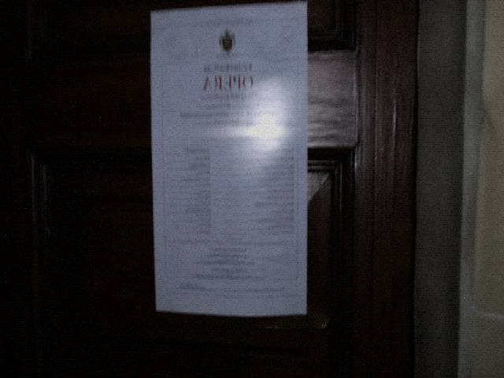

| Tongxian Experimental Troupe | |
| Home| Visit notice| This week's Playbill| Cast & crew| Troupe history| Backstage booking | |
Columns |
 Night of 2014-08-21: Mulian, Crossing Naihe. CurtainUp 19:00. DutyBook: Mulian — in-troupe; Naihe ghost-soldiers — rotation; Stagehand — DiHou (on leave); temporary Extra — to be filled. The to-be-filled row is not printed in the margin of this online Playbill. The margin is on the scan. The scan can be pulled only from ticketing. Audience East Row 7 is for the package. The package list and the DutyBook are not the same book. Not the same book, and they can still be written as the same number. Ask ChengShi about that. WhitePlay is the afternoon of 2014-08-22. The play is issued separately. The WhitePlay Playbill does not write Extra. It does not write out-of-town numbers. This online sheet is for outsiders. The margin is in the transcript. |
| Tongxian Experimental Troupe · office line does not take refunds | |
This week's Playbill print note. Written by the troupe accountant. Clipped under the online Playbill footer so nobody treats the online sheet as the original.
Printed Thursday afternoon at the town-mouth copy shop. The owner is Gui Sheng. Thirty sheets. Three mao a sheet. Yellow paper. Edges go fuzzy after the run. The Stagehand row was going to print pending. ChengShi said write on leave. Write pending and people ask if he is sick. Sick gets passed around outside. DiHou on leave, print on leave. Do not add funeral in parentheses. Funeral printed out looks like a missing-person notice. Temporary Extra prints as to be filled. The to-be-filled row is not printed in the margin of this online Playbill. The margin is on the scan. The scan can be pulled only from ticketing. This online sheet is for outsiders. To check the words, check the paper. Paper is in the west wing. The west wing is not open. Audience East Row 7 is for the package. The package list and the DutyBook are not the same book. Not the same book, and they can still be written as the same number. Ask ChengShi about that. Do not ask accounting. Accounting only matches the invoice for the thirty sheets. WhitePlay is the afternoon of 2014-08-22. The play is issued separately. The WhitePlay Playbill does not write Extra. It does not write out-of-town numbers. Gui Sheng asked whether to print the margin too. ChengShi said no. No means this online sheet is always short one row. Short one row is not a print miss. Gui Sheng's machine jammed Thursday. The jammed sheet lost half of Naihe. ChengShi would not use it. Pulled and reprinted. The reprint paper is yellower. The yellower sheet got mixed into the sample they photographed for the web. The sample is not the original. The original is not photographed. Do not read to-be-filled as empty. Empty and to-be-filled are not the same thing. There is this show. Stagehand on leave, there is still this show.